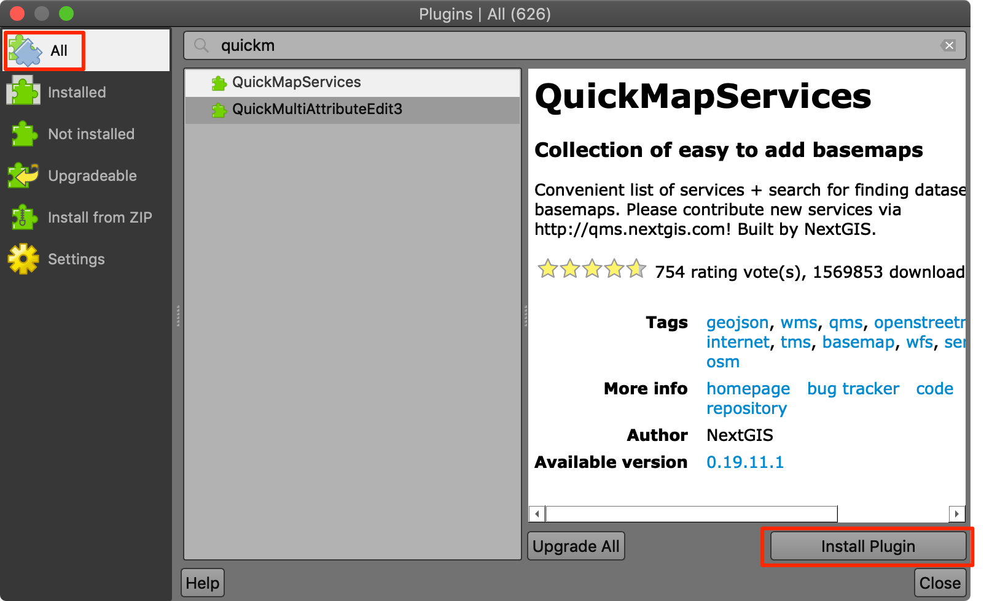
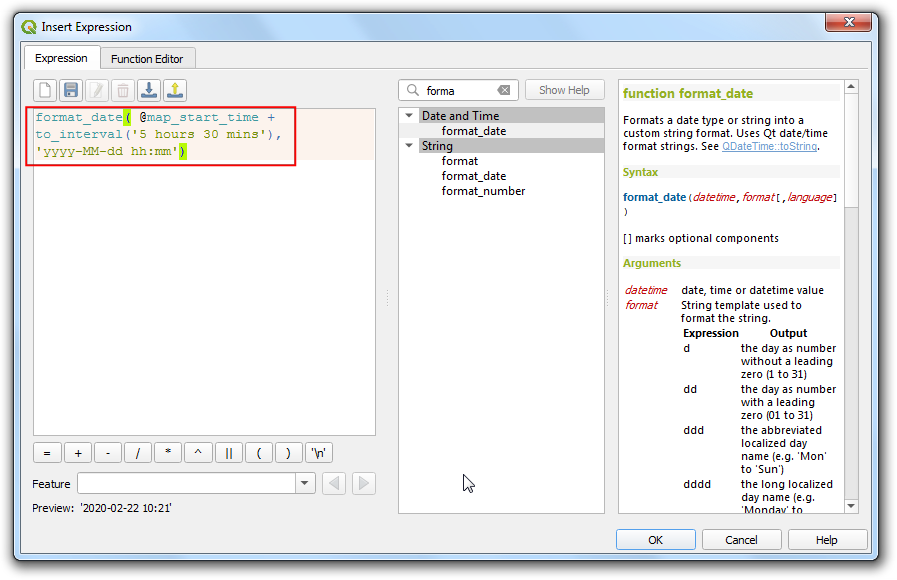
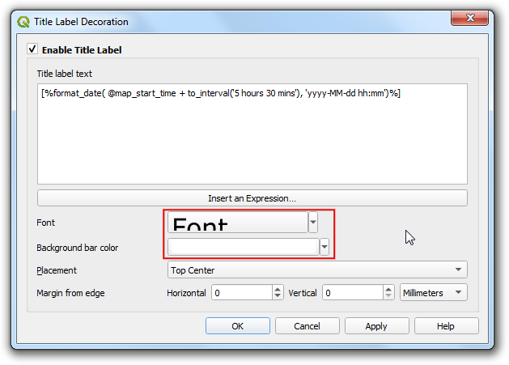
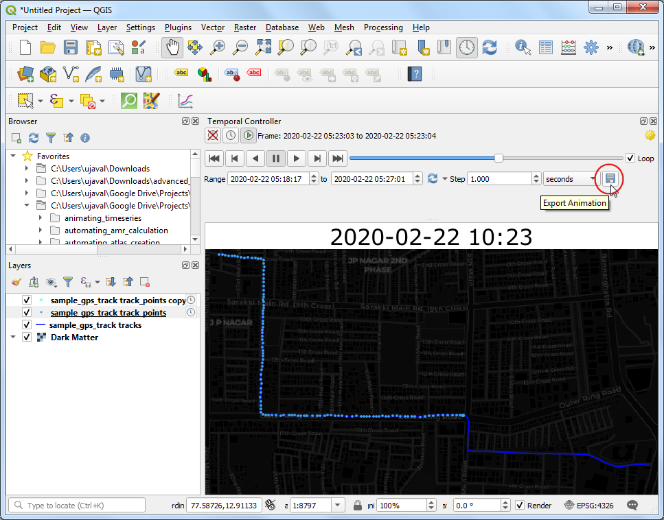
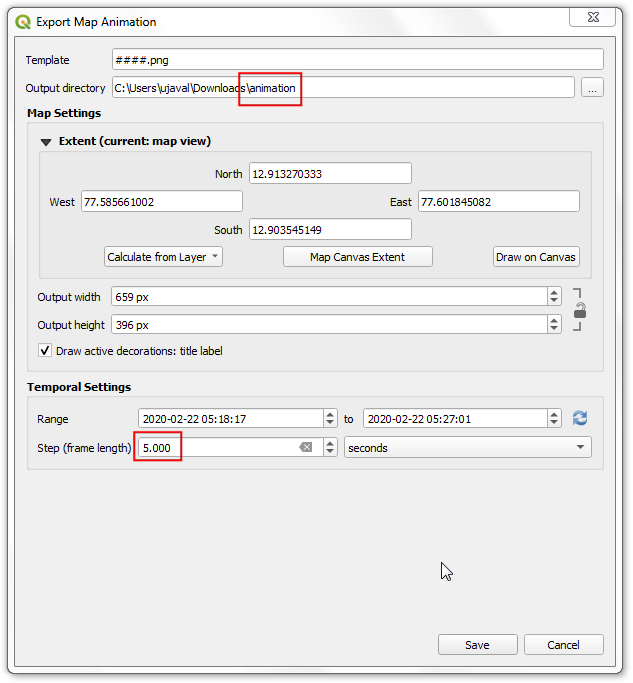

Spatial Data Visualization with QGIS (Full Course Material)
A modern introduction to working with spatial datasets with QGIS
Ujaval Gandhi

Introduction
This class is a broad introduction to working with location datasets. We will cover a wide range of use-cases and applications that give you hands-on experience in techniques for visualizing mapping data and deriving insights from them. This class assumes no prior knowledge of GIS/Remote Sensing and suitable for practitioners of all disciplines. We will use the open-source program QGIS for all the exercises.
Software
This course requires QGIS LTR version 3.16. Please review QGIS-LTR Installation Guide for step-by-step instructions.
Configuration
QGIS offers an easy way for developers to extend the core functionality of the software using plugins. Plugins can be installed from QGIS from Plugins → Manage and Install Plugins... To install a plugin, switch to the All tab and search for the plugin. Once you find it, select and click Install Plugin.

For this class, we will be using the following plugins. Go ahead and install them.
- QuickMapServices
- QuickOSM
Get the Data Package
The exercises in this class use a variety of datasets. All the required layers, project files etc. are supplied to you in the file spatial_data_viz.zip. Unzip this file to the Downloads directory.
Not enrolled in our instructor-led class but want to work through the material on your own? Get free access to the data package
Complete the Class Pre-Work
This class needs about 1-hour of pre-work. Before starting the exercises, it is important to understand how spatial data is modeled and learn about coordinate reference systems.
A Practical Introduction to GIS Video
Please watch the following video to get a good understanding of GIS concepts. Video can be streamed using video link below.
Take the Quiz
After you watch the video, please complete the following quiz to test your understanding. Quiz is open to everyone.
Understanding Spatial Data
Why do we care about location?
“Everything is related to everything else, but near things are more related than distant things.” - Waldo Tobler’s First Law of Geography
When modeling and analyzing our world, location is a critical factor. A non-spatial model cannot accurately reflect the processes and interactions happening in our world. Take this example - predicting housing prices - where a spatial prediction model performed much better than a purely non-spatial one.
Location data is everywhere
Today the availability of location data - both for individuals and businesses - has exploded. Spatial data adds another dimension to data, and reveals patterns that are otherwise not obvious.
Individuals - with GPS sensors on their smartphones - have the ability to tag their data with location. Photos taken with smartphones have the location embedded in it. If opted-in, one can store and access their location history on an ongoing basis.
Most businesses have location data in one form or the other. Customer addresses, IP-locations of website visitors, sales territories, supply chain routes and so on. For other businesses - such as taxi aggregators, food delivery, logistics - generate huge amounts of location data that can be mined for intelligence.
IoT (Internet-Of-Things) devices are collecting location data continuously alongside with sensor data.
Governments are also increasing collecting and sharing location based data. Data relating to urban infrastructure, census, LIDAR and aerial imagery etc. are being collected at massive scale. Many governments have implemented open data sharing policies - making this data available to individuals and businesses to use.
Spatial Data Model
The spatial data model consists of 2 parts: geometry + properties
Geometry (Shape) is defined with coordinates and a coordinate reference system Properties (Attributes) is defined with data and data types
Consider the following representation of a city as a point.
{
"type": "Feature",
"geometry": {
"type": "Point",
"coordinates": [ 77.58270263671875, 12.963074139604124]
},
"properties": {
"id": 1,
"name": "Bengaluru"
}
}This representation is in GeoJson format. The point geometry is defined with X (Longitude) and Y (Latitude) coordinates. The point is assigned 2 properties - id with a value of 1, and name with the value of Bengaluru. The GeoJson format supports only 1 type of Coordinate Reference System (WGS84), so we do not need to specify it explicitly.
Spatial Data Formats
We saw a basic way to represent the spatial data. But there is a variety of data formats to represent the data to suit different applications. In most cases, spatial data formats are an extension of existing data formats.
| Type | Non-Spatial Data | Spatial Data |
|---|---|---|
| Text | csv, json, xml | csv, geojson, gml, kml |
| Binary/Compressed | pdf, xls, zip | shapefile, geopdf, geopackage |
| Images | tiff, jpg, png | geotiff, jpeg2000 |
| Databases | SQLite, PostgreSQL, Oracle | Spatialite, PostGIS, Oracle Spatial |
Spatial Data Types
Spatial Data can be broadly categorized into 2 types - Vector and Raster. For serving these data on the web, they are usually cut into smaller chunks (tiles), so they can be categorized as the 3rd type.
| Type | Sub Types | Examples |
|---|---|---|
| Vector | Point | Sensor Observations, Places |
| Line | GPS Tracks, Roads, Rivers, Contours | |
| Polygons | Administrative Boundaries, Buildings | |
| Point Cloud | LIDAR surveys | |
| Raster | Photos | Aerial and Drone Photos |
| Grids | Satellite Imagery, Elevation Data | |
| Mesh | Climate and Scientific Data | |
| Tiles | Raster Tile Layers | Web Maps |
| Vector Tile Layers | Web Maps |
Map Projections and Coordinate Reference Systems
If there was one thing that makes spatial data ‘special’ - it would have to be Coordinate Reference System (CRS) or Spatial Reference System (SRS).
A Map Projection transforms the earth from its spherical shape (3D) to a planar shape (2D).
A Coordinate Reference System (CRS) then defines how the 2D map relates to real places on the earth.
The QGIS Documentation provides a comprehensive introduction to the topic.
There are hundreds of different map projection and CRS - each with different properties and uses. The most important thing to remember is that every projection distorts the map in some way. This mashup of map projections distortions provide a useful visual reference to population projection. For a more in-depth guide, you can refer to Jochen Albrecht’s guide to choosing a projection. A recent papaer shows the impact of projection choice for area and volume calculations.
So what projection should you use for your project? This being a vast and complex topic, often, the answer is - it depends. But following are guidelines that will help you.
- Global Maps: If you are producing global maps, the preferred and modern choice is the Equal Earth projection. Added advantage of this projection is that it preserves areas, so it is also a good choice for global scale analysis that require equal-area grids.It is much more visually appealing that other alternatives like the Gall-Peters projection. Newer versions of QGIS has built-in support for various Equal Earth CRSs. If you are using an earlier version, you will need to define a Custom CRS with the following proj string
+proj=eqearth +datum=WGS84 +wktext
The Equal Earth Projection
- Country Maps: Most countries have adopted a specific CRS designed to minimize distortions over the region. You should consult the country’s national mapping agency (USGS, Ordnance Survey, Survey of India etc.) for guidance. For India, the National Spatial Framework (NSF) recommends using the CRS EPSG: 7755 for country-level mapping - which is based on Lambert Conformal Conic (LCC) projection.

India Political Map by Survey of India
- Local and Regional Maps: Similar to country-level CRSs, most countries have a state/province level CRSs. In absence of them, the Universal Transverse Mercator (UTM) provides a good overall system that can be used in any part of the world. The distortions within each zone is minimized, and if the area of interest is contained within the zone - it is a good choice for analysis as well as mapping. Here’s a map showing all the UTM zones of the world. For India, UTM Zones 42N, 43N, 44N, 45N, 46N and 47N are used depending on the where your area of interest is located.

UTM Zones of the world
Points
The simplest representation of spatial data can be done using a table. A place can be represented using a pair of coordinates - Latitude and Longitude - with other attribute information about the place. Many spatial data source come in this form. Excel sheets, CSV files, database tables etc.
Exercise: Mapping Air Quality
Worsening air quality is a severe problem in many countries around the world. India - particularly - Delhi suffers from acute problems of high pollution levels.One of the first steps to better understand the problem, is to have continuous monitoring of air quality across the cities. Many organizations have stepped up and setup such sensors that collect air quality data and make it publicly available. OpenAQ is a platform that collects this data from all public sources and makes it available in an easy to use form.
If you are interested in this air quality in India, Urban Emissions has a lot of relevant information and datasets.
We will take the sensor data for PM2.5 concentrations 1 day and map it. The aim is to turn this tabular data info an informative spatial data visualization.
For this exercise, we are using daily average data for Delhi, India for February 15, 2020. This data was downloaded from OpenAQ Data Download

- Open the
openaq.csvfile in a text editor and examine it. Each row of data contains data from 1 monitoring station. Thelatitudeandlongitudecolumn contain the coordinates of the station and thevaluecontains the daily average PM2.5 concentration

- Tabular data in text files fall into the category of Delimited Text files, such as this can be imported in QGIS via Data Source Manager. Click Open Data Source Manager button.

- Browse to the
openaq.csvfile and open it. As we want to import this file as points, select Point coordinates. Chooselongitudeas X Field andlatitudeas Y Field. ChooseEPSG 4326 - WGS 84in Geometry CRS. Click Add.

- You will see the tabular data now loaded in QGIS canvas as a spatial data layer. Use the Identify button and click on any of the point. You will see the attribute data that is attached to each point.

- Through we can see the point distribution is across the city of Delhi, we are missing the context on where is point is located. A base-map layer will help us understand this data better. The QuickMapServices plugin gives us ready access to many different types of base-maps. Go to Web → QuickMapServices → OSM → OpenStreetMap monochrome layer.
Note: If you don’t see the OpenStreetMap monochrome, Go to Web → QuickMapServices → Settings, switch to More services, click
Get Contributed Pack. Click Save.

- A new layer will get added to the Layers panel and the Canvas. Now you can see the points in the context of the city and surroundings. Let’s style the point layer better now. Click Open the Layer Styling Panel.

- We will color each point according to the observed PM2.5 value. Choose
Graduatedrenderer andvalueas the Value column. Set the number of Classes to6and click Classify.
The default classification mode is Equal Count - which is fine for this exercise. You can learn more about Data Classification Modes in the QGIS Documentation.

For the class ranges to have some meaning, we need to link them to the commonly used scale. India has adopted National Air Quality Index with the following definitions.

- Let’s adjust the class values to match those defined in the National Air Quality Index. We can also change the Legend labels to the human-readable category names. You can double-click each class range and edit it.
Note: The range boundaries includes the upper bound value but excludes the lower bound value. So if the range is 30-60, the range will include all values >30 and <=60. See the discussion here for more info.

- As you edit the categories, the map visualization will change accordingly. The layer legend will also show the legend labels now.

- We can change the color also to match those defined in the index. Select the dropdown next to the color ramp and select the
RdYlGn(Red-Yellow-Green) ramp.

- We want the ramp to go from Green (low PM2.5 values) to Red (high PM2.5 values) - so click the dropdown again and select Invert Color Ramp.

- We will add labels to the points now. Switch to the Labels tab.

- Choose
Single labelsandvalueas Value. Scroll down and check Formatted numbers and change the Decimal places to0.

- Next, switch to the Background tab. Check Draw background and adjust the Size X and Size Y.

- Scroll down to the Fill color section. We want the fill color for each box to match the color of the associated point. Click the Data defined override button and choose Edit.

- Double-click the
@symbol_colorvariable to add it to the expression. Click OK.

- You will see the map change and the label shields will have the color matching the category based on the values. We will move the labels slightly above so the points are also seen. Switch to the Placement tab and select Offset from point. Check the Offset Y to
-5.

- Lastly, go the Callouts tab and check Draw callouts to make it easy to see which labels belong to which point.

- It is a good idea to save out work. Click the Save Project button and save it as
air_quality.qgz.

- You can see most of the labels are legible, but some are too close and feel a bit cluttered. We can fix them by manually adjusting the placement. Right-click anywhere on the toolbar area and enable the Label Toolbar.

- Click the Move a Label button. Click OK on the Auxiliary Storage prompt.

- With the Move a Label button active, click on a any label to select it. Click at the place you want to move it to, and it will be placed there. Once you are satisfied, save the project. It is time to export our map. Go to Project → New Print Layout…. Leave the name empty and click OK.

- Print Layouts are a way to compose a static map with various elements such as labels, legends, north arrow, scale bar etc. Go to Add Item → Add Map.

- Drag a rectangle where you want the map to be rendered. Once you let go of you your mouse button, the map from the main canvas will be loaded in the region.
If you do not see the full extent of your map in the region, you can click the Set Map Extent to Match Main Canvas Extent button located in the toolbar under Item Properties for
Map 1

- Next, we will add a Rectangle which will hold the tile, legend and attribution.

- Place the rectangle on the top-right hand corner and change the Corner radius to
10.

- Next, add a Label within the rectangle we just created. Enter the title
Average PM2.5 Concentration (µg/m3)and date15 February, 2020.

- In the same rectangle, add another Label with the attribution text
Data Source: Central Pollution Control Board, EPA AirNow DOS. Downloaded from OpenAQ.org. Now we will add a legend, so our users know how to interpret various colors on the map. Go to Add Item → Add Legend

- Drag a box to insert the legend in the rectangle. Go to the Item Properties tab and turn-off Auto update. Remove the
OpenStreetMap monochromelayer and set theopenaqgroup label to Hidden.

- The default legend placement is vertical - in a single column. We can change it to be in multiple columns to make it span horizontal. Scroll down to the Columns section and change the Count to
2and check Split layers button.

- In the Main Properties section, enter a Title for the legend as
Air Quality Index Category.

- Once you are satisfied with the map, we can export the map. You can export the composition as an Image if you wanted to use it in a website, email, slideshow etc. You can also export it to as an SVG so it can be further edited in a graphics program such as InkScape. But the most common format for maps is still a PDF.

Credit: Atanas Entchev
So let’s export our map to a PDF. Before exporting, switch to the Layout tab. We are using the basemap layer from OpenStreetMap. This layer is created using individual tiles that are zoom dependent. Setting a higher export resolution will fetch higher resolution tiles with different labeling scheme when exporting. You may experiment with this value to get the right level of detail in the basemap. For this particular exercise Export resolution to 100 dpi works well. Go to Layout → Export as PDF.

- In the PDF Export Options, you can check Create Geospatial PDF (GeoPDF). GeoPDF is an enhanced PDF format that is spatially aware and preserves layer and attribute information. Click Save and save the output as
delhi_air_quality.pdf.

- If you open the resulting PDF in a compatible reader such as Adobe Acrobat, you can toggle layer visibility, query attributes by features, measure distances and so on.
In Adobe Reader, you can enable the measuring tool by going to Tools → Measure. Learn more

Lines
Many of our transportation infrastructure such as roads, bridges, railways etc. as well as natural features such as rivers, streams etc. can be modeled as lines. Other abstract concepts, such as contours and trajectories are also modeled using linear features. Shapefiles, GeoJSON, GPX are commonly used file formats for storing line datasets.
Exercise: Visualize GPS Tracks
GPS tracks have become ubiquitous in modern life. With GPS built-into most phones, many of us capture the tracks while running or biking outdoors. Cab companies use GPS tracks collected during the trip to determine fares. Delivery and logistics companies store and analyze millions of GPS tracks from their assets to derive location intelligence.
We will use a GPS track I collected using the open-source GPS Logger app on my Android phone while cycling to work. If you are on iOS, I recommend the open-source app Open GPX Tracker that can record GPS tracks. The default format for storing GPS tracks is GPS Exchange Format (GPX). It is a XML-based text format that allows storing points, tracks and routes in a single file. We will use the data in sample_gps_track.gpx file and create an animated GIF showing the trip.
- Locate the
sample_gps_track.gpxfile and drag it to the canvas.

- As the file contains multiple data types, a pop-up will ask us to select the layers to add. Hold the Shift key and select both
track_pointsandtrackslayers. Click OK.

- To add some context to the map, we should add a basemap. A dark background map works best for the visualization we want to create. Go to Web → QuickMapServices → CartoDB → Dark Matter layer.

- Turn off the visibility of the
sample_gps_track pointslayer by un-checking the box next to it. Select thesample_gps_track trackslayer and click Open the Layer Styling Panel. You can change the line Color toBlueand Width to0.5.

- Turn on the visibility of the
sample_gps_track pointslayer and select it. In the Layer Styling Panel, select Simple marker symbol. Change the point Size to1. Choose a lighter shade of Blue as the Fill color and aTransparent Strokeas Stroke color.

- We want to give a glow effect to the points as it is animating. Right-click the
gps_pointslayer and choose Duplicate Layer.

- Drag the duplicate layer on top of the stack in the Layers panel. In the Layer Styling Panel for the duplicated
sample_gps_track points_copylayer, choose bright neon as the Color from the color picker and increase the size to1.5. Check the Draw Effects option and click the Effects button next to it.

- In the Effects Properties panel, check Outer Glow. Select
2.0for both Spread and Blue radius.

- Now we are ready to animate the points. Right-click the
sample_gps_track points_copylayer and select Properties.

- Switch to the Temportal tab. Check the Temportal button. Select
Single Field with Date/Timeas the Configuration. Settimeas the Field. Click OK.

- You will notice that a clock icon now appears to the layer indicating that this layer can now be controlled by the Temporal Controller. Next, right-click the
sample_gps_track pointslayer and select Properties.

- Repear the same configuration as before. But this time, check the Accumulate features over time. This setting will keep the points from the past timestamps visible as the layer is animated.

- Locate the Temporal Controller Panel button from the Map Navigation Toolbar.

- The Temporal Controller panel will appear at the top of the map canvas. Click the Animated temportal navigation button.

- Next, click the Set to Full Range button to load the start and end times automatically. Set the Step to
1and from the drop-down select seconds. Click the Temporal Settings button on the top-right corner.

- Set the Frame rate to
10.

- Check the Loop button and hit the Play button. You will see the map canvas animate to show the trip progress.

- It would be useful to have the current time displayed on the map. Go to View → Decorations → Title Label….

In the Title Label Decoration, click the Insert an Expression button.

The current timestamp of the map is stored in the
@map_start_timevariable. We can use it with theformat_date()function to create a readable timestamp. But note that the GPS timestamps are in universal time (UTC). So we can useto_interval()function to convert it to the UTC+5:30 timezone for India. Enter the following expression
format_date( @map_start_time + to_interval('5 hours 30 mins'), 'yyyy-MM-dd hh:mm')
- Click the Font options and increase the font size to
24. Set the Background bar color toWhite. Click OK.

- Now as you play the animation, the timestamp will update to display the time of the current point on the track. Click the Export Animation button to save the animation as individual frames.

- In the Export Map Animation dialog, select the Output directory. The track is over 500 seconds long, so to reduce the number of frames, you can increase the Step to
5. Click Save and QGIS will write an image for each time step to the chosen directory.

- Once you have the individual frames, you can use a program such as ezgif.com to create an animated GIF from them. [View Animated GIF ↗]

Polygons
Regions are modeled as polygons. Polygons are most commonly used to model administrative areas, buildings, land parcels etc. Polygon geometry is represented as a series of coordinates. Since the shapes can be complex, polygons have a more verbose geometry descriptions and seldom come in a CSV files. GeoJSON and shapefile are the most commonly used file formats for storing polygon datasets.
Exercise: Mapping Census Data
Census data is one of the major sources of secondary data available in a country. Many types of spatial analysis requires detailed demographic information that is available from the census data.
Census data is usually published as tables by aggregating the raw numbers to an administrative region - typically a census block. To map these tables, one needs to know the geometry of these regions - which are supplied separately as boundary files. Both of these can be joined to create a polygon layer that can be visualized and mapped. See this tutorial on how this process is carried out in QGIS.
We will use India Village-Level Geospatial Socio-Economic Data Set published by NASA Socioeconomic Data and Applications Center (SEDAC). This dataset combines the village/town level boundaries with Primary Census Abstract (PCA) and Village Directory (VD) data series of the Indian census. It is distributed as shapefiles.
For this exercise, we will be using the shapefile for the state of Karnataka and map the literacy rate in the Gulbarga district.
- Locate the
india-village-census-2001-KA.shpfile in the Browser panel and drag it to QGIS canvas.

- A new layer
india-village-census-2001-KAwill be added to the Layers panel. Use the Identify tool to click on any polygon are explore the attributes. The definitions of each column is contained in the documentation that is supplied with the data. As we are looking to map the literacy levels, the attributes with_LITsuffix are useful for our purpose. TheP_LITcolumn refers to Person Literates andTOT_Prefers to Total Population that we will use to calculate and map literacy rate.

- We want to select a subset of polygons from this layer belonging to the Gulbarga district. Load the
gulbarga_district.shplayer that has been extracted from the Districts shapefile supplied by DataMeet. The columnDT_CEN_CDcontains the district id for this particular district. We can use this to filter the polygon layer.

- In the Layers panel, drag the
gulbarga_districtlayer below theindia-village-census-2001-KAlayer. Right-click theindia-village-census-2001-KAlayer and select Filter.

- Enter the expression
DISTRICT = 4to select all villages and towns from our chosen district. Click OK.

- You will see a filter icon next to the
india-village-census-2001-KAlayer indicating that a filter is applied to the layer. The map canvas will update to show only the polygons belonging to the district.

- Now we will create a thematic map showing the literacy rate in the district. When creating a thematic (choropleth) map such as this, it is important to normalize the values you are mapping. A common mistake is to use totals instead of rates in such map.

Credit: Kenneth Field @kennethfield
Click Open the Layer Styling Panel. Select Graduated renderer. In the Value column, click the Expression button.

- Enter the following expression. As we want to map literacy rate, we can normalize the total literate persons by dividing with the total population.
100*("P_LIT"/"TOT_P")
- Choose a color ramp and the Mode of your choice and click Classify. You can also open the color ramp drop-down and select Invert color ramp to make the colors go in the reverse order. You will see the polygons colored according to the literacy rates. Mapping this makes is much easier to see the pattern that villages to the south of the district have much lower literacy rates than their northern counterparts.
There are many way to categorize your data into classes. This article gives a good overview with pros/cons of each mode.

- If you zoom in - you will notice gaps in the polygon layer. These are the areas with cities which do not have Village Directory (VD) data tables and thus excluded in this data layer. Instead of a hole, we can style is better to indicate no-data values. Select the
gulbarga_districtlayer. Change the Symbol layer type to beLine pattern fill. Change the spacing as per your liking.

- You will notice that the options for fill do not have a cross pattern fill. That is because it can be easily created by combining 2 line pattern fills of opposite direction. Click the Duplicate the current layer button in the Layer Styling Panel.

- Change the Rotation value to
-45.00degrees. You will see the gaps now rendered with a cross-pattern fill.

- You have a visualization of the literacy rate in the district.

Raster - Photos
Photos collected from airborne sensors - such as kites, hot-air balloons, planes, helicopters and more recently UAVs - are useful source of information for mapping. They often act as a basemap - providing context for other spatial data. They are also used to extract feature information that are modeled as vector data.
The most common format for imagery is GeoTiff. A geotiff file contains additional metadata that allow us to convert pixel location (row/column) to a real-world location (latitude/longitude). A regular photo can be converted to a spatially-aware raster through a process known as GeoReferencing.
Exercise: View Drone Imagery
OpenAerialMap is an open service to share and download overhead imagery. We will use an image of Kathmandu University Grounds shared by WeRobotics.
- Browse to the
kathmandu_drone_imagery.tiffile and drag it to QGIS. Use the Zoom/Pan tools to explore the imagery.
 2. At the bottom right, notice that the CRS is EPSG:32645 which refers to the UTM Zone 45N. Select the Identify tool and click anywhere on the image. You will see that the image contains 3 bands - one each for Red, Green and Blue. The coordinates are projected coordinates - not geographic coordinates. These are referred as X (Easting) and Y (Northing).
2. At the bottom right, notice that the CRS is EPSG:32645 which refers to the UTM Zone 45N. Select the Identify tool and click anywhere on the image. You will see that the image contains 3 bands - one each for Red, Green and Blue. The coordinates are projected coordinates - not geographic coordinates. These are referred as X (Easting) and Y (Northing).

- As the image is also georeferenced, we can see it in context of other spatial layers. Go to Web → QuickMapServices → OSM → OSM Standard. A tile layer will be added to the Layers panel and you can see both line up with each other since both layers are spatially aware.

Raster - Satellite Images
There are hundreds of Earth Observation Satellites in space continuously capturing images of the earth. Many space agencies around the world make this data available freely. These datasets are immensely valuable to scientists, researchers, governments and businesses.
The satellite images are different than regular photos because they contain information across many bands of wavelengths - not just - Red, Green and Blue. This rich information allows machine learning models to easily distinguish different objects. For example, an astroturf and real lawn may both look green, but reflect the infrared light very differently. So one can easily differentiate between these using the additional information contained in a multi-spectral image.
Exercise: View Sentinel-2 Image and Create Composites
Sentinel-2 is a European Space Agency (ESA) mission with 2 satellites. The resolution of each pixel in the image is 10 meters. This is lower than drone or aerial imagery resolution, but still good enough for city and region level analysis. More importantly, the data is captured in 12 different bands - making it very useful for scientific applications. These mission capture every location on the earth every 5 days, allowing for continuous monitoring of the whole earth. ESA also makes all the data from this mission freely available.
We will load a Sentinel-2 image for Bangalore, India captured on 18 February, 2020. The data package directory imagery/sentinel-2 4 files in JPEG2000 format. The 4 files are for bands Red (B4), Green (B3), Blue (B2) and Near Infrared (B8).
- Drag all 4 images to the QGIS canvas. Zoom in to any area. Select the Identify tool from the Attributes Toolbar and click on the image. In the Identify Results window, select View as
Tableand explore how the same object has different reflectance in different bands.

- We can combine multiple bands into a single image and visualize it. These are called Color Composites. To merge individual images to a single one, go to Processing → Toolbox and find GDAL → Raster miscellaneous → Build virtual raster. Double-click to launch the tool.

- Select all 4 layers as Input layers and check Place each input file into a separate band. Next click Run.

- A new layer
Virtualwill be added to the Layers panel. This layer contains references to the 4 different images. Note that the order of the bands in alphabetical, so the mapping in the virtual raster is as follows:
| Virtual Raster Band | Image |
|---|---|
| Band 1 | B02 (Blue) |
| Band 2 | B03 (Green) |
| Band 3 | B04 (Red) |
| Band 4 | B08 (NIR) |
We will first visualize a RGB Color Composite. This is also referred as a Natural Color Composite since it is how the image would be perceived by the human eye. Place Band 3, Band 2 and Band 1 as Red, Green and Blue bands. Change the Min/Max Value Settings to Cumulative count cut. You will see the image now appears in natural colors.

- Let’s create a different type of visualization, known as False Color Composite. Here we want to create a NRG Color Composite where we put Near Infrared band in Red channel, Red band in green channel and Green band in blue channel. This visualization highlights the vegetation in red color and allows for easy visual interpretation of vegetation. Note how the water body and vegetation appeared almost the same color in the RGB composite, but are easy to separate in the NRG composite.

Point Clouds
Modern mapping technology includes doing aerial surveys using a LiDAR sensor. LiDAR stands for “Light Detection and Ranging”. This sensor uses light pulses to determine the distance to the objects of the ground. For each light-pulse that is sent out the system computes X,Y and Z coordinates of the object. This data representation is not new for spatial data - but since survey of even a small area can result in millions of such points - standard tools for viewing and processing points do not work. Such a Point Cloud is typically stored in the LAS or LAZ formats.

Credit: Cargyrak, Wikipedia
Exercise: View Point Cloud from an Aerial Survey
UK’s Department of Environment Food & Rural Affairs (DEFRA) provides country-wide LiDAR data and products via the Defra Data Services Platform under an open license. We will use a point cloud dataset for Oxford University available as a LAZ file.
- Plasio is a browser-based LAS/LAZ point cloud viewer. Visit plas.io. Click Browse and locate the
SP5008_P_10967_20161130_20161130.lazfile. Click Open. Note that this small region is rendered with over 3.5M source points.

- Once the data is loaded, scroll down in the right-hand panel and locate the Intensity Source section. Select
Heightmap Grayscaleoption from the drop-down selector.

- Use the left-mouse button and scroll-wheel to zoom/pan around and explore the dataset.

Raster - Elevation Data
Raster data is well suited for modeling continuous phenomena, such as elevation. Each pixel of the raster is assigned the height as the value. This is a simple but effective way to model the terrain. Such raster are known as a Digital Elevation Model (DEM).
Digital Elevation Models fall into 2 broad categories
- Digital Surface Model (DSM): A DSM represents the true surface of the earth, including tree canopy, buildings etc.
- Digital Terrain Model (DTM): A DTM represents the bare ground and natural terrain. A DTM is usually created by algorithmic or manual processing of a DSM.
Exercise: View and compare DSM/DTM
UK’s Department of Environment Food & Rural Affairs (DEFRA) provides country-wide elevation data products via the Defra Data Services Platform under an open license. We will use DSM and DTM dataset for Oxford University available as a ASC files, dsm_F0195499_20161130_20161130_mm_units.asc and dtm_F0195499_20161130_20161130_mm_units.asc
The .asc file is in the text-based ASCII Raster File Format. It is a simple data format that contains a header with information about the raster and pixel values as rows/columns. If you open any of the files in a text editor, it will appear as below:
cols 2000
nrows 2000
xllcorner 450000
yllcorner 208000
cellsize 1
NODATA_value -9999
-9999 -9999 -9999 -9999 -9999 -9999 ...
...
...The header contains the X and Y coordinates of lower-left (ll) corner of the image. Knowing this 1 coordinate pair, the size of the image and the Coordinate Reference System (CRS) will allow us to geo-reference the entire image. The information about the CRS is contained in the metadata and is specified as EPSG:27700 British National Grid. We now have enough information to view these rasters.
- Open QGIS. Before we load the data, we should set our project CRS to the CRS of the rasters. Go to Project → Properties.

- Switch to the CRS tab and search for
EPSG:27700and select it. Click OK.

- Locate the
dsm_F0195499_20161130_20161130_mm_units.ascfile and drag it to the canvas. Select Identify and click anywhere on the image. You will see that the Band 1 of the image contains the elevation of the pixel in millimeters.

- Click Open the Layer Styling Panel. Select
Singleband pseudocolorrenderer. Expand the Min / Max Value Settings section and select Cumulative count cut. Select a color ramp of your choice. Once the style is applied you will be able to see the building outlines, trees, riverbed etc clearly.

- Next locate the
dtm_F0195499_20161130_20161130_mm_units.ascfile and drag it to the canvas. To enable easy comparison between the 2 layers, we should visualize them with the same parameters. Fortunately QGIS provides an easy way to copy/paste styles between layers. Right-click thedsm_F0195499_20161130_20161130_mm_unitslayer and go to Styles → Copy Style.

- Next, select the
dtm_F0195499_20161130_20161130_mm_unitslayer, right-click and go to Styles → Paste Style.

- Toggle the visibility of the top layer and compare both the DSM and the DTM. You will see the DTM contains only the underlying terrain with all natural and man-made features removed. View Animated GIF ↗

Data Credits
- Delhi PM2.5 concentrations. Downloaded from OpenAQ data download service. Source data from Central Pollution Control Board (CPCB) India and EPAAirNow DOC.
- OSM Tile Layer, Bangalore Metro Stations : (c) OpenStreetMap contributors
- India Village-Level Geospatial Socio-Economic Data Set. Meiyappan, P., P. S. Roy, A. Soliman, T. Li, P. Mondal, S. Wang, and A. K. Jain. 2018. India Village-Level Geospatial Socio-Economic Data Set: 1991, 2001. Palisades, NY: NASA Socioeconomic Data and Applications Center (SEDAC). https://doi.org/10.7927/H4CN71ZJ. Accessed 15 February 2020.
- Census 2001 Districts: Downloaded from Datameet Spatial Data repository.
- Oxford Point Cloud. DTM, and DSM. Downloaded from Defra Data Services Platform. Crown Copyright 2019
- Kathmandu University Ground Drone Imagery. Downloaded from OpenAerialMap. Captured by WeRobotics
- Zanzibar Cloud-Optimized GeoTiff and XYZ Layer. Accessed from OpenAerialMap. Commission for Lands (COLA) ; Revolutionary Government of Zanzibar (RGoZ)
- Bangalore Sentinel-2 Imagery. Downloaded from Copernicus Open Access Hub. Copyright European Space Agency - ESA.
License
This course material is licensed under a Creative Commons Attribution-NonCommercial 4.0 International License. You are free to use the material for any non-commercial purpose. Kindly give appropriate credit to the original author.
If you would like to utilize these materials as part of a commercial offering, you can purchase a Trainer License for a small fee.
Please contact us for pricing and terms.
© 2020 Ujaval Gandhi www.spatialthoughts.com
This course is offered as an instructor-led online class. Visit Spatial Thoughts to know details of upcoming sessions.